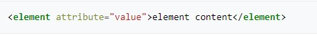
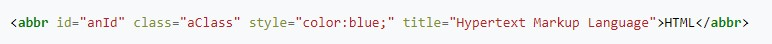

Video Giovanni Beltran Etiquetas Básicas de HTML
El siguiente video es autoria del estudiante de ingenieria de sistemas de Universidad Nacional Abierta y a Distancia UNAD, explicando los conceptos basicos de HTLM, requeridos por la materia Diseños de sitios web.
Segun Korpela, Jukka (6 de julio de 1998) Los atributos de HTML son palabras especiales utilizadas dentro de la etiqueta de apertura, para controlar el comportamiento del elemento. Los atributos de HTML son un modificador de un tipo de elemento de HTML. Un atributo tampoco modifica la funcionalidad por defecto de un tipo de elemento o proporciona funcionalidad a ciertos tipos de elementos incapaces de funcionar correctamente sin ellos. En sintaxis HTML, un atributo se añade a una etiqueta de inicio de HTML. Los atributos de HTML generalmente se muestran como una pareja nombre-valor, separados por =, y están escritos dentro de la etiqueta de inicio de un elemento, después del nombre del elemento:  Dónde element nombra el tipo element del HTML, y atributte es el nombre del atributo puesto al value (valor) proporcionado. El valor puede estar encerrado en comillas simples o dobles, aunque hay valores compuestos de ciertos caracteres y que pueden quedar descomillados en HTML (pero no en XHTML). Dejar valores de atributo descomillados se considera inseguro. A pesar de que la mayoría de los atributos se proporcionan como nombres y valores parejados, algunos afectan a la simplicidad del elemento con su presencia en la etiqueta de inicio del elemento (como el atributo ismap para el elemento img). El elemento de abreviatura, abbr, se puede usar para mostar estos distintos atributos:  Este ejemplo visualiza como HTML, y en la mayoría de los navegadores, al apuntar con el cursor en la abreviatura, debería mostrar el texto de título: "Hypertext Markup Language." La mayoría de elementos también toman la los atributos relativos a lenguas lang y dir. W3C. Consultado el 13 de febrero de 2015